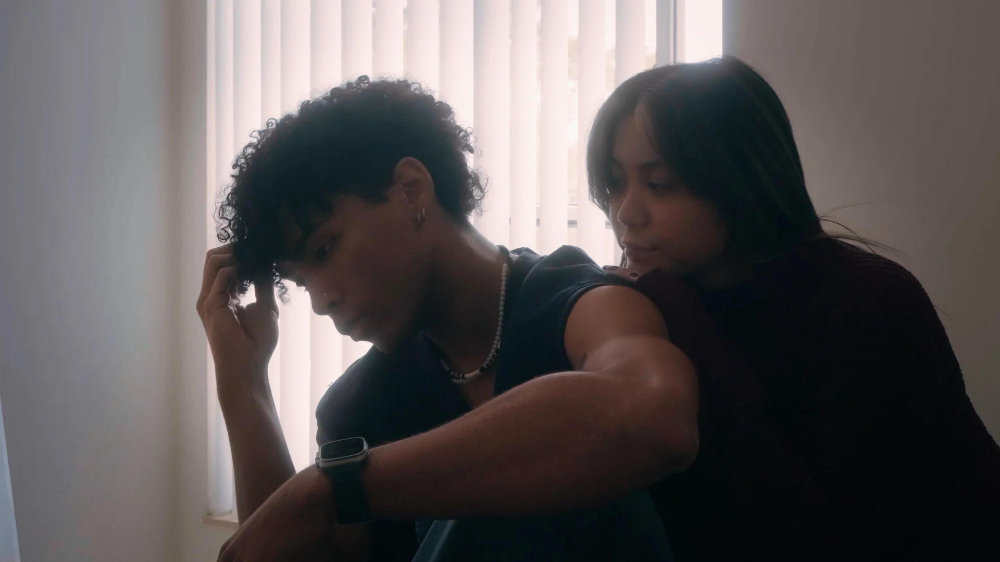
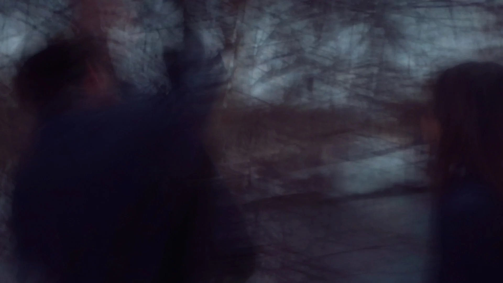
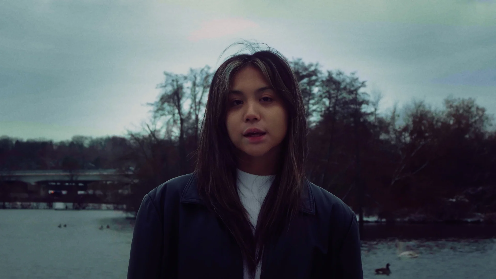
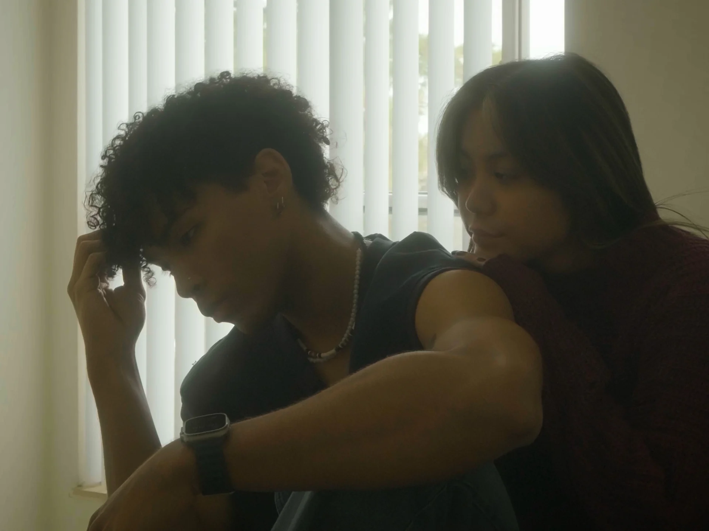
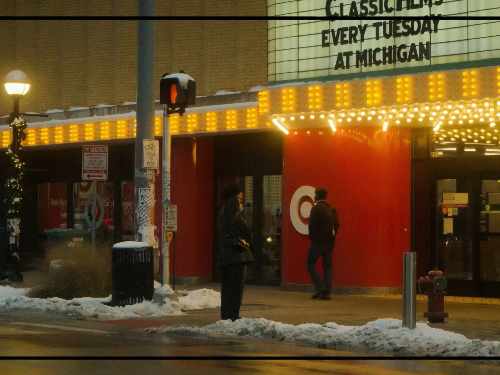
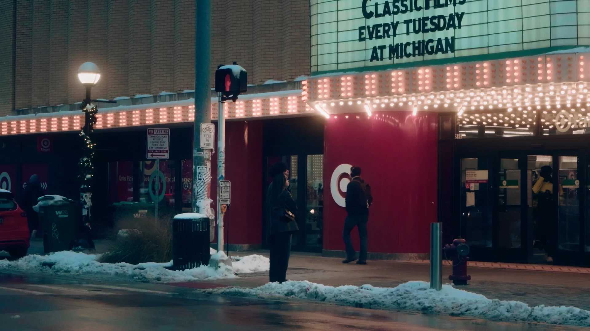
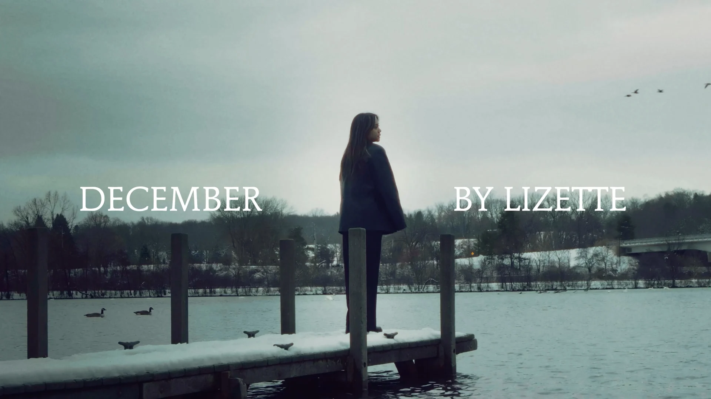
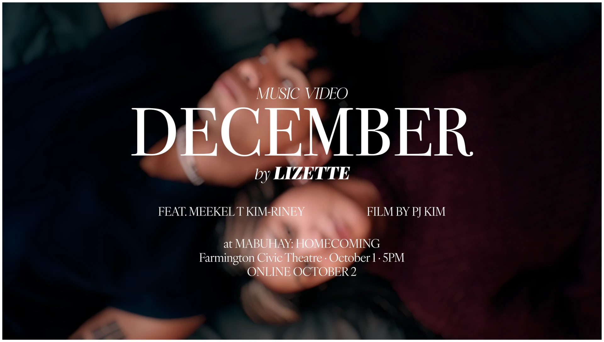
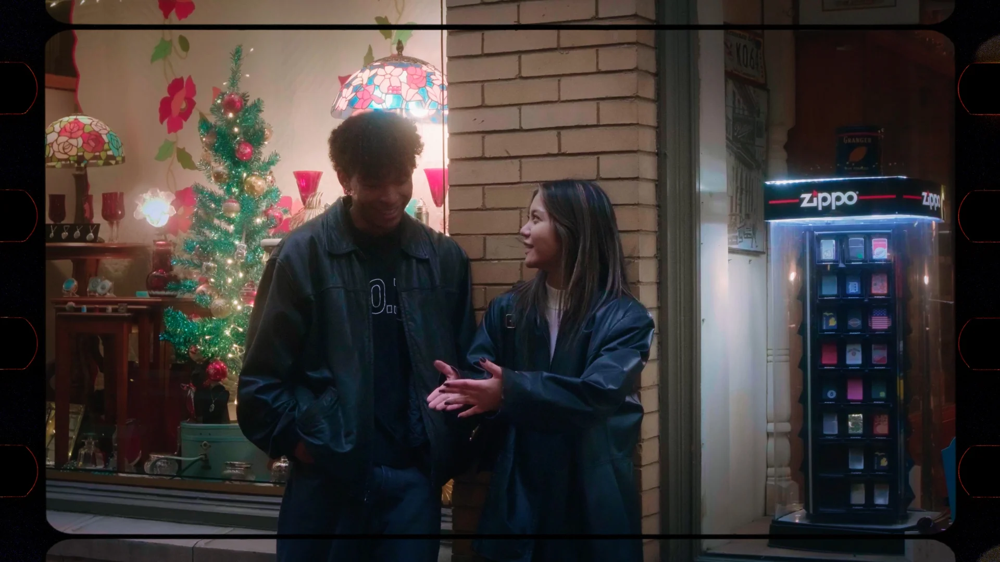

01 — THE PULL
Two bodies share a frame without sharing certainty.

LIZETTE PRESENTS
FEATURING
LIZETTE · MEEKEL T KIM-RINEY
DIRECTED · SHOT · EDITED · COLORED
BY PJ KIM
MUSIC VIDEO
A push and pull between two people who never quite became one thing.
Lizette reached out to me on Instagram while preparing the release of her debut single. I directed, produced, shot, edited and colored the video, shaping the lyrics into the quiet tension of a situationship: wanting someone close, then needing them gone.
“December” became the feeling rather than the date. Snow, bare water and empty streets hold the characters at a distance; the bedroom brings them close enough for every hesitation to register.
A first look at the theatrical re-grade. The final film is still being finished for its new release.
Two bodies share a frame without sharing certainty.

Low shutter speed turns conflict into residue.

Winter air gives the song its emotional temperature.
A year later, I returned to the finished project with fresh eyes and better technique. The new grade is not a different film—it is a more intentional version of the one I was always trying to make.
I rebuilt the image in DaVinci Resolve without LUTs, using primary balance, curves and color separation to deepen the blacks, cool the environment and preserve warmth in skin. Traditional grading choices create the film texture instead of a preset.

DRAG TO COMPARE


The storyboard tracked emotional temperature as much as coverage: public distance, private friction, then winter isolation. The final frames keep that original structure while letting performance lead.
THEATRE SCENE
AT NIGHT
COUPLE FIGHTING
LOW SHUTTER SPEED

03DOCK / WATER
WINTER LIGHT

The new grade is being prepared for theatrical screenings in October 2026. December will first screen alongside Aronjonel Villaflor’s Mabuhay at its homecoming premiere in Metro Detroit, with the new online release following.
FILM AND RELEASE MATERIALS STILL IN PROGRESS
